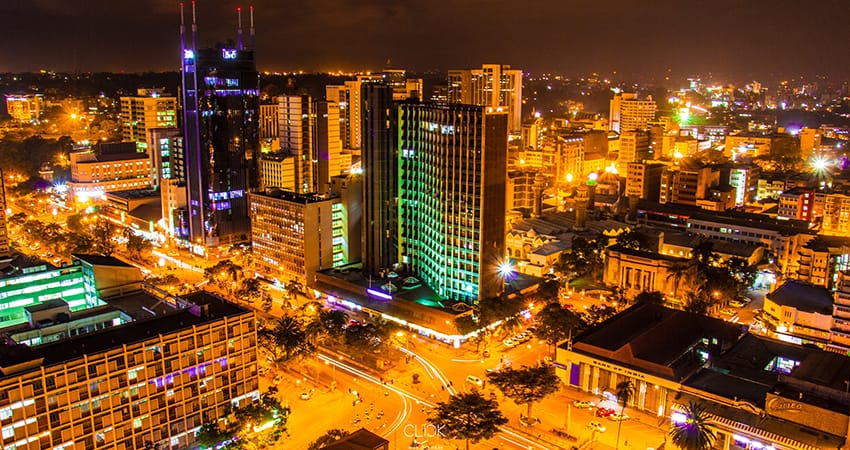

Nairobi is the capital and largest city of Kenya, located in the south-central part of the country. It was founded in 1899 as a railway depot during the construction of the Uganda railway. Today, its one of the most important political, financial and cultural centres.
